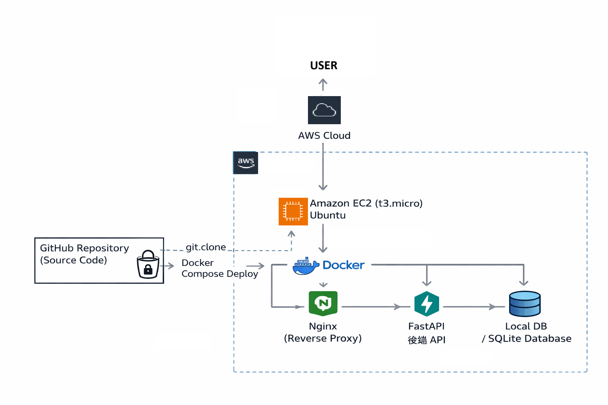
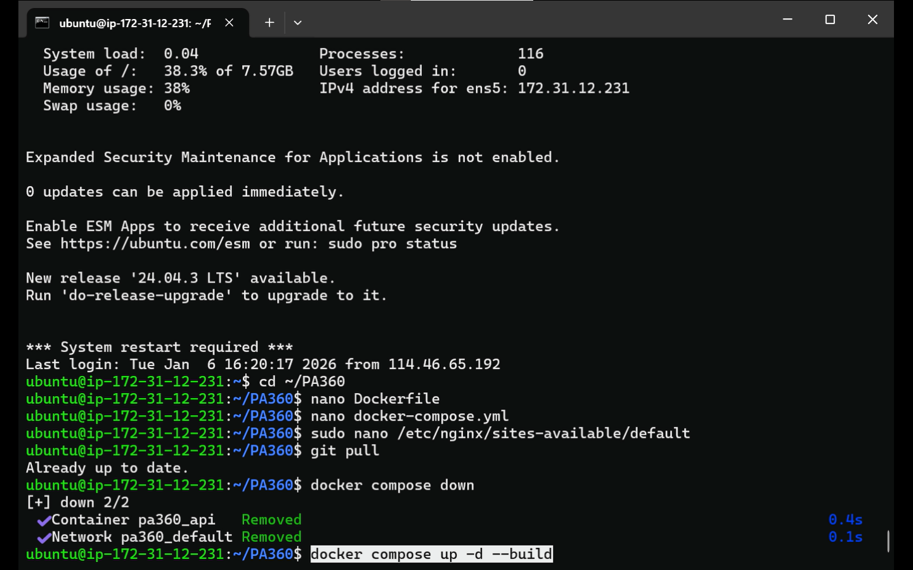
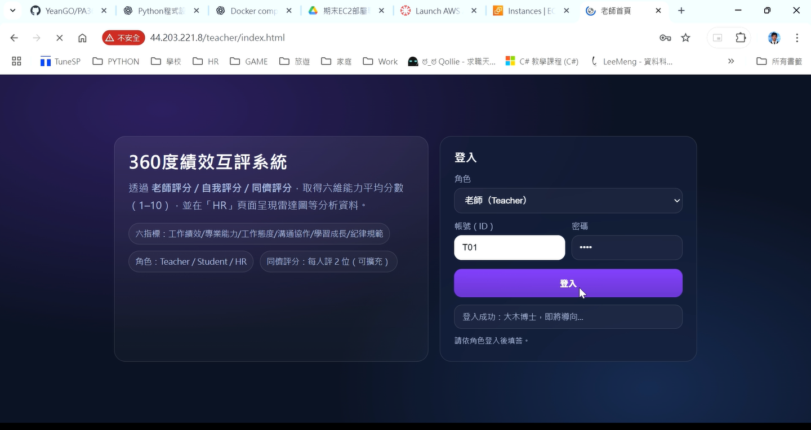

Cloud Project Detail
02｜PA360 雲端部署實作：AWS EC2 × Docker
PA360 的雲端延伸，呈現從系統開發到部署上線的實作能力。
專案簡介
本作品延伸 PA360 360 度績效互評系統的開發成果，將原本於本機環境執行的 FastAPI 系統部署至 AWS EC2 雲端主機，並透過 Docker 與 Docker Compose 建立可重建、可重新啟動的容器化服務。
部署過程中，我實際完成 EC2 Ubuntu 執行個體建立、Security Group 網路規則設定、SSH 遠端連線、GitHub 專案下載、Docker 容器啟動、Nginx 反向代理設定，最終讓系統可透過外部瀏覽器公開存取，完整呈現從本機開發到雲端部署的實作流程。
部署成果展示
Demo｜雲端部署與系統公開存取展示
下方影片展示 PA360 系統部署至 AWS EC2 後的實際成果，包括雲端主機環境、容器化服務啟動，以及透過外部瀏覽器公開存取系統頁面的驗證流程。
雲端部署架構圖
此架構圖呈現 PA360 系統上雲後的主要運作流程，包含使用者瀏覽器、EC2 公網入口、Nginx 反向代理、Docker 容器、FastAPI 應用程式與 SQLite 資料庫之間的關係。

部署流程與成果畫面
以下畫面呈現本專案在雲端部署過程中的重要實作節點，包含 AWS 主機建立、遠端連線與服務啟動，以及最終透過公開網址成功瀏覽系統的成果。


部署目標
將本機專案成功上雲
將原本於本地端執行的 PA360 FastAPI 系統部署至 AWS EC2，使其具備實際公開存取能力。
熟悉 EC2 主機設定與遠端連線流程
實作 Ubuntu 主機建立、SSH 登入、安全群組設定與基本 Linux 操作，建立雲端主機管理經驗。
以 Docker 建立可重建的部署方式
透過 Docker 與 Docker Compose 管理服務啟動流程，讓部署環境更容易重建、維護與更新。
雲端架構說明
本專案採用 AWS EC2 作為雲端執行環境，於 Ubuntu 主機中部署 PA360 系統。外部使用者透過瀏覽器存取 EC2 公網入口，再由 Nginx 接收請求並轉發至 Docker 容器中的 FastAPI App。系統資料則由應用程式存取 SQLite Database 完成保存與讀取。
此架構雖屬小型部署方案，但完整涵蓋了 Web 系統上雲時的重要基礎概念，包括公開主機與網路存取、Web Server / Reverse Proxy、應用服務容器化、後端 API 運作與本機型資料庫儲存。
實作部署流程
- Step 1｜建立 AWS EC2 Ubuntu 執行個體
選擇適合的 Ubuntu 映像檔，建立雲端虛擬主機作為部署環境。 - Step 2｜設定 Security Group 與 SSH 連線
開放必要連線規則，並使用 SSH 金鑰安全登入雲端主機。 - Step 3｜Clone GitHub 專案
於 EC2 主機中下載 PA360 專案原始碼，作為後續部署基礎。 - Step 4｜安裝 Docker 與 Docker Compose
在 Ubuntu 主機中完成容器化工具安裝，準備執行應用服務。 - Step 5｜啟動容器化服務
透過 Docker Compose 建立並啟動 FastAPI、Nginx 等相關服務。 - Step 6｜確認系統可由瀏覽器公開存取
使用 EC2 公網 IP 或網頁入口驗證部署成果，確認系統可正常載入與操作。
使用技術
Cloud Infrastructure
Operating System & Remote Access
Deployment & Version Control
Web Service
Data Storage
遇到的問題與學習
Security Group Port 設定
問題情境：即使系統已在 EC2 主機中啟動，若 Security Group 未開放對應 Port，外部瀏覽器仍無法連線。
學習收穫：理解雲端主機的服務可用性不只取決於應用程式是否啟動，也與網路規則與存取權限密切相關。
公網 IP 變更造成存取路徑不同
問題情境：EC2 執行個體停止再啟動後，公開 IPv4 可能改變，導致原先使用的測試網址失效。
學習收穫：理解雲端主機公開 IP 可能變動，並開始建立部署前需重新確認連線資訊的習慣。
Docker 重新 Build 與服務重啟流程
問題情境：當專案程式碼更新後，需要重新 Build image 並啟動容器，否則雲端主機仍可能執行舊版本服務。
學習收穫：熟悉容器化部署中的更新流程，理解程式碼更新、映像重建與服務重啟之間的關係。
Nginx 反向代理設定
問題情境：若 Nginx 路由或代理設定不正確，瀏覽器可能無法正確導向後端 FastAPI 服務。
學習收穫：理解 Web Server 在部署架構中所扮演的入口角色，並初步建立反向代理的實作經驗。
專案成果與收穫
- 將 PA360 FastAPI 系統成功部署至 AWS EC2
- 完成 Ubuntu 主機與 SSH 遠端管理流程
- 使用 Docker / Docker Compose 建立容器化服務
- 透過 Nginx 完成 Web 入口轉發
- 成功由外部瀏覽器公開存取系統
- 建立對雲端部署問題排除的實務經驗
透過本次部署實作，我將原本於本機開發完成的 PA360 系統進一步搬移至 AWS 雲端環境，完成從應用程式開發、雲端主機建置、容器化部署到公開網頁存取的完整過程。
這項作品讓我實際理解，一套系統要能真正被外部使用，除了功能本身之外，還需要處理主機環境、網路存取、部署流程、服務啟動與維護更新等問題。對我後續朝資訊系統開發、雲端應用與金融業 IT 方向發展而言，這是一項能具體呈現「開發與部署整合能力」的重要作品。